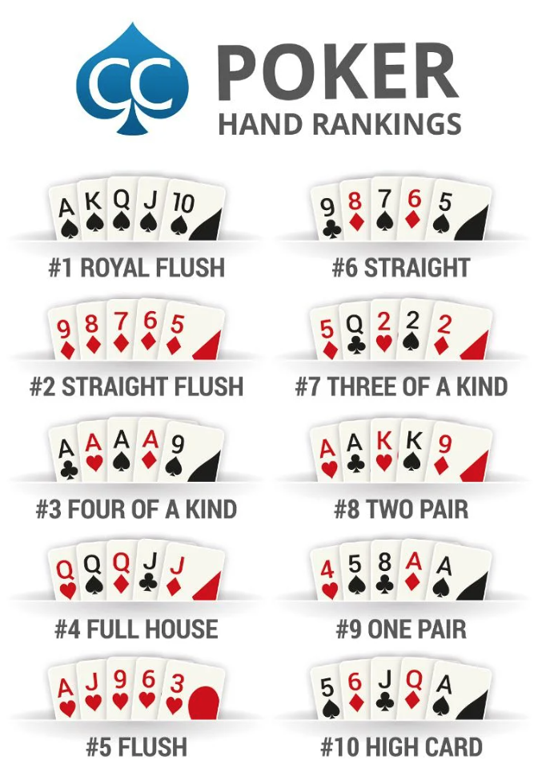

Create a vector for card suits with the variable name suits, containing the following four elements (as character strings): "Diamonds", "Clubs", "Hearts", "Spades". Write suits (on its own) as the final line of your code cell, so that the output of the cell shows the contents of the vector you created.
Question 1.2
Create a vector for card numbers with the variable name numbers, containing the character string "Ace" followed by the integers 2 through 10. Display the contents of numbers as the output of your code cell (as you did in Q1.1).
Question 1.3
Create a vector for face cards with the variable name faces, containing the character strings "Jack", "Queen", and "King". Display the contents of faces as the output of your code cell.
Question 1.4
Create a new vector with the variable name card_names, formed by concatenating the elements of the faces vector to the end of the numbers vector. Display the contents of card_names as the output of your code cell.
Question 1.5
Repeat each element in card_names four times, and name the new variable card_names_4. Display the contents of card_names_4 as the output of your code cell.
Question 1.6
Repeat each element in suits 13 times, naming the new variable suits_13. Display the contents of suits_13 as the output of your code cell.
Question 1.7
Create a data.frame variable named card_deck, constructed so that its first column is named card_name and contains the values of card_names_4, and its second column is named suit and contains the values of suits_13. Display the contents of card_deck as the output of your code cell.
Question 1.8
Create a new column in card_deck named card by pasting the values in the first column (card_name) to the values in the second column (suit). Here you can use the built-in R function paste() to paste these 2 variables together. Display the new contents of card_deck as the output of your code cell.
Question 1.9
Now you have a deck of cards, which you can use to compute probabilities! First, to verify that the deck was successfully created, write code which outputs the number of rows in the card_deckdata.frame (it should be 52, if the above steps were carried out correctly)
Question 1.10
Now, use what you know about filtering the values in a data.frame to compute the probability that a randomly-drawn card from card_deck is a Spade, and display this probability as the output of your code cell.
Question 1.11
Use card_deck again to compute the probability that, when drawing two cards from the deck, the first is a Spade and the second is a Heart. Display this probability as the output of your code cell.
Question 1.12
Now let’s simulate playing poker! Using what you know about sampling from a data.frame, sample 5 cards from card_deck (please use set.seed(2024) to set the random seed to be 2024, so that results are the same across different submissions). Display the sampled 5-card hand as the output of your code cell. Then, using the following image as a guide if you’re unfamiliar with poker, comment on the cards you obtained—did your random draw result in one of the types of hands displayed in the image?

Problem 2: Loading and Cleaning Data
For this problem, rather than creating our own dataset from scratch, we will load and analyze a pre-existing dataset on global superstore orders.
Question 2.1
First, import the file named Global_Superstore_Orders_2016.csv using R’s built-in read.csv() function, storing the result into a data.frame variable named orders.
Next, read more about the read.csv() function by typing ??read.csv in the R Console. Make sure you understand the optional header argument, since you’ll need to provide the TRUE as the value for this argument when you call the read.csv() function in the previous step!
Finally, display the first six rows of orders as the output of your code cell, by using R’s built-in head() function.
Question 2.2
Use str() to check the type of each variable. You’ll see that read.csv() did not correctly identify the data types for all columns loaded from the .csv file. Which variables have inappropriate types, and what should their data types be instead?
Question 2.3
Create a separate data.frame named sales_data, containing only the following columns from orders: Order.Date, Ship.Date, State, Country, Sales, Profit, and Order.Priority. Display the first six rows of sales_data (using head()) as the output of your code cell.
Question 2.4
Update the sales_datadata.frame you created in Q2.3 so that the columns you identified in Q2.2 have the correct types (factor, Date,..etc.).
Hint: You’ll want to use the lubridate library to convert character strings into Date types. To do so, you’ll need to identify what format the dates are in, then use the appropriate function from the Parse Date-Times section of the lubridate cheat sheet. The following cell provides an example, where we parse the character string "2024-05-01" into a Date object representing the 31st day of December in the year 2024:
library(lubridate)
Attaching package: 'lubridate'
The following objects are masked from 'package:base':
date, intersect, setdiff, union
Use str() on the updated sales_data variable to confirm that each of the variables you identified in Q2.2 now has the correct type.
Question 2.6
Check whether there are any NA/missing values in sales_data.
Question 2.7
Store the names of the columns of sales_data into a new variable called sales_col_names. Also find out how many rows that the dataset has and assign it to the variable sales_num_rows. Display the values of both sales_col_names and sales_num_rows as the output of your code cell. (We may use this dataset and these variables in future assignments)
Question 2.8
Q2.8: Write code to compute the mean value of the Sales column when the order priority is "Critical", and the mean value of Sales when the order priority is "High". Which of the two mean values is greater?
Question 2.9 (Bonus)
(For +1 bonus point) Compute the mean sales for each of the 50 US states.
Hint: you should use R’s built-in aggregate() function to accomplish this, rather than manually entering the names of all 50 states!